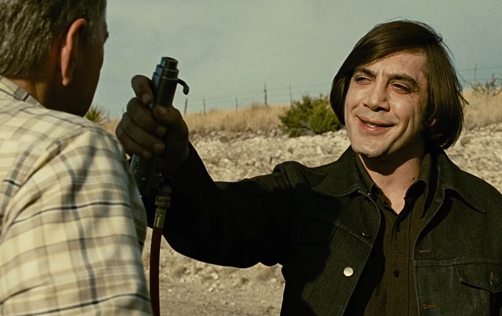
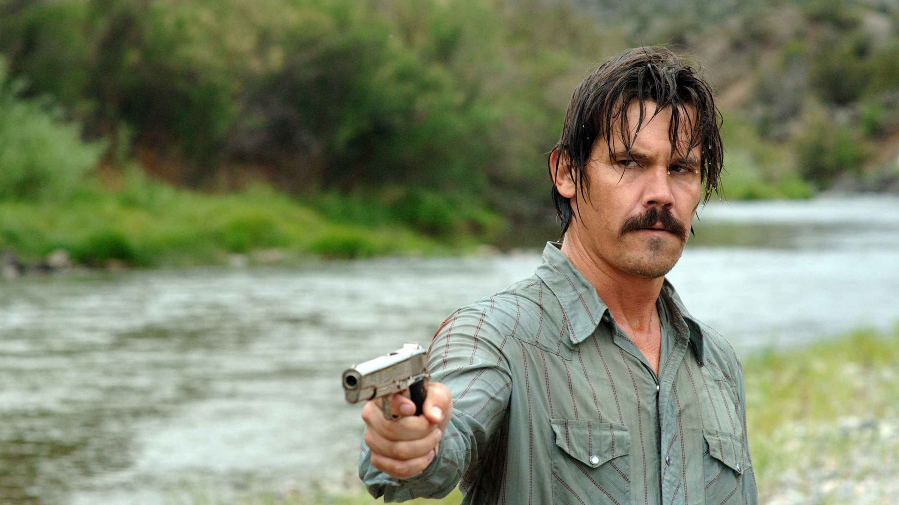
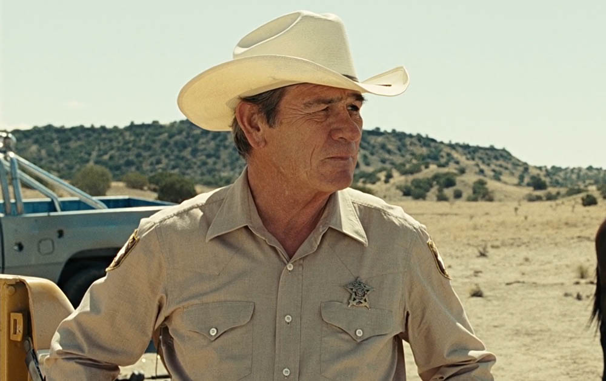
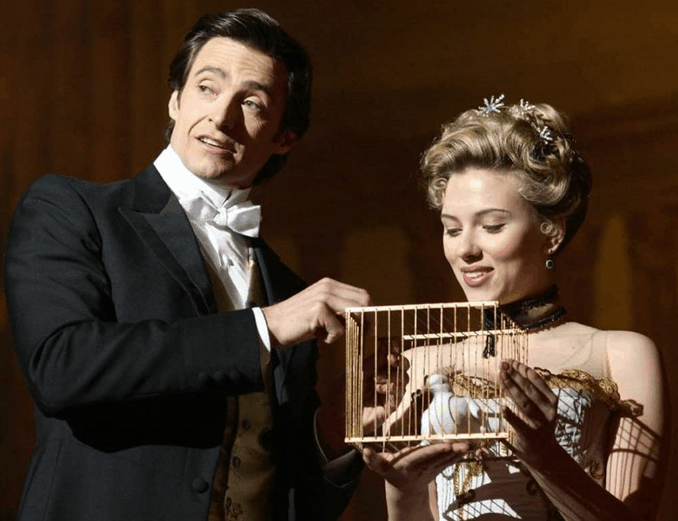
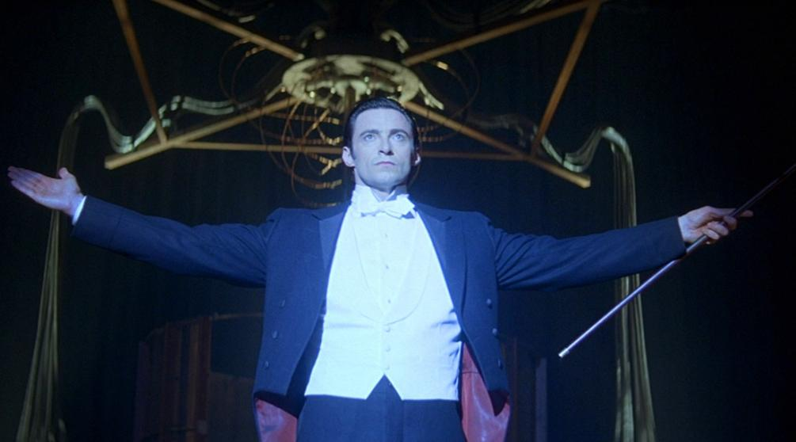
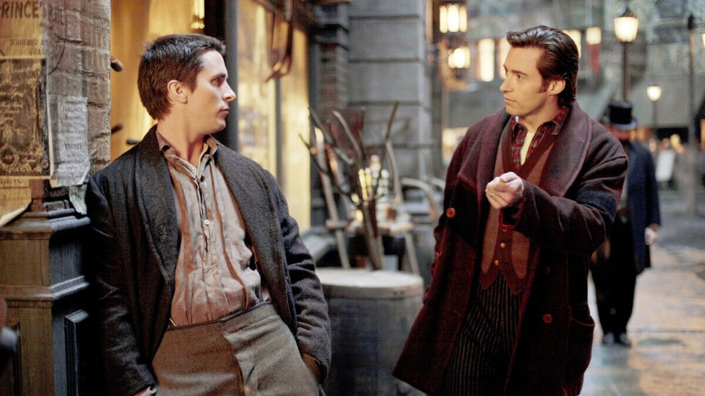
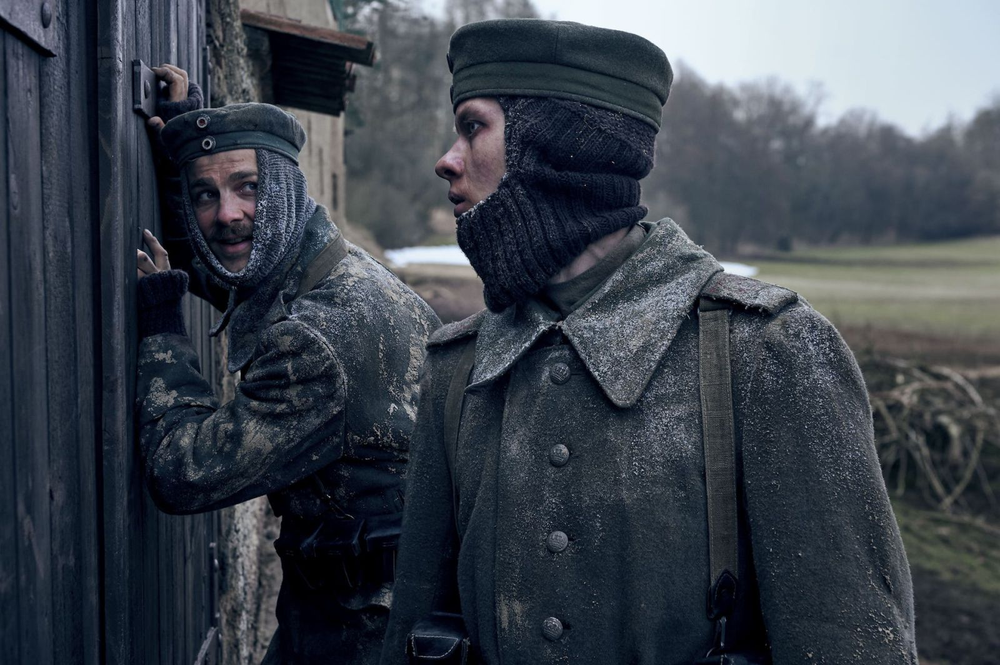
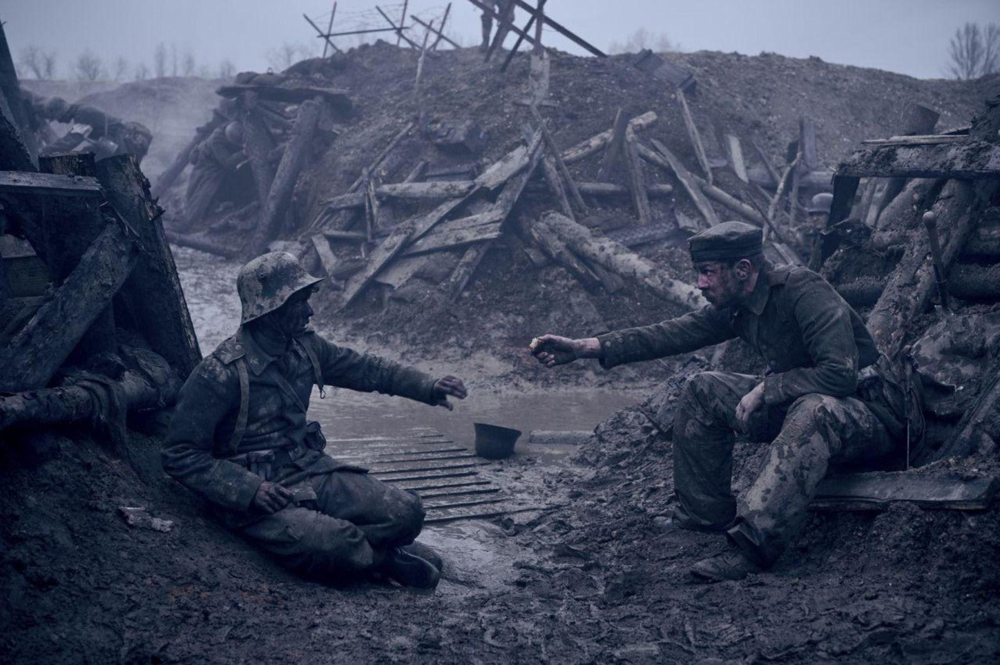
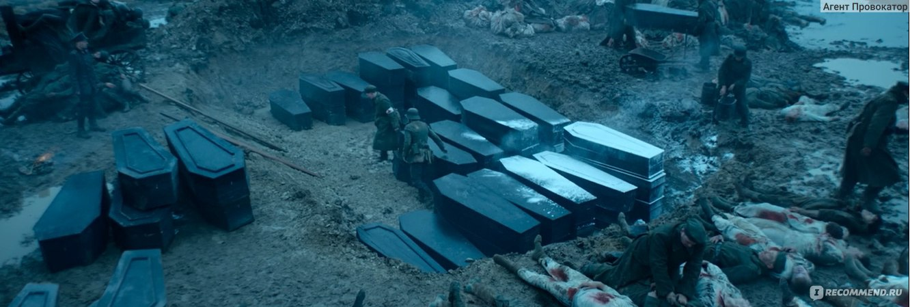

Старикам тут не место
Краткое содержание фильма
Запад Техаса, 1980 год. Охотник Льюэллин Мосс находит в пустыне чемодан с деньгами, оставленный на месте неудачной сделки с наркотиками. Присвоив деньги, он становится целью для наемного убийцы Антона Чигура. Между ними начинается смертельная игра, в которую оказывается втянут стареющий шериф.
Кадры из фильма



О фильме
| Год: |
2007 |
| Страна: |
США |
| Жанр: |
Криминал, триллер, драма |
| Режисеры: |
Итан и Джоэл Коэны |
Престиж
Краткое содержание фильма
Два фокусника, Альфред Борден и Роберт Энджер, становятся непримиримыми соперниками. Оба стремятся раскрыть секреты друг друга и создать идеальный трюк. Их противостояние становится все более опасным, затрагивая их близких и окружающих.
Кадры из фильма



О фильме
| Год: |
2006 |
| Страна: |
США, Великобритания |
| Жанр: |
Триллер, драма, мистика |
| Режисер: |
Кристофер Нолан |
На западном фронте без перемен
Краткое содержание фильма
Фильм рассказывает о Первой мировой войне глазами молодых немецких солдат. Они отправляются на фронт, веря в героизм и славу, но вскоре сталкиваются с ужасами войны, которые ломают их психику и мировоззрение.
Кадры из фильма



О фильме
| Год: |
2022 |
| Страна: |
Германия |
| Жанр: |
Военная драма |
| Режисер: |
Эдвард Бергер |